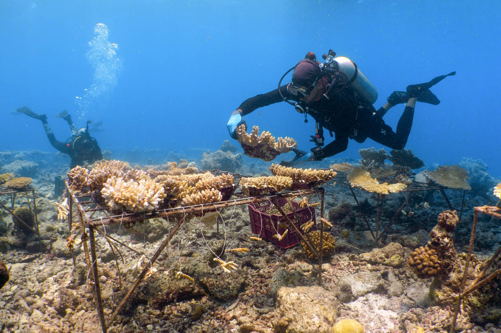

Was ist ReCoral?
Was ist ReCoral? ReCoral ist eine Umweltorganisation, die sich aktiv für den Schutz und die Wiederherstellung von Korallenriffen einsetzt. Korallenriffe zählen zu den artenreichsten und wichtigsten Ökosystemen unseres Planeten. Sie bieten Lebensraum, Schutz und Nahrung für tausende verschiedene Meeresbewohner wie Fische, Schildkröten und viele andere Meerestiere. Ohne gesunde Korallenriffe würde ein großer Teil der marinen Artenvielfalt verloren gehen. Doch diese wertvollen Lebensräume sind stark bedroht. Klimawandel, steigende Wassertemperaturen, Umweltverschmutzung und zerstörerische Fischereimethoden führen dazu, dass immer mehr Korallenriffe geschädigt oder vollständig zerstört werden. Wenn wir jetzt nicht handeln, könnten viele dieser einzigartigen Ökosysteme unwiederbringlich verloren gehen. Genau hier setzt ReCoral an. Unsere Organisation arbeitet daran, geschädigte Riffe wieder aufzubauen, neue Korallen zu pflanzen und das Bewusstsein für den Schutz der Meere zu stärken. Mit gezielten Projekten und nachhaltigen Lösungen möchten wir die Natur unterstützen und langfristig erhalten. Jede Unterstützung hilft dabei, die Unterwasserwelt zu schützen und die Zukunft unserer Ozeane positiv zu beeinflussen.

Helfen Sie mit
Gemeinsam können wir Korallenriffe wiederherstellen und einen wichtigen Beitrag zum Schutz unserer Ozeane leisten. Jede Unterstützung hilft dabei, neue Korallen zu pflanzen, geschädigte Riffe zu stärken und wertvolle Lebensräume zu erhalten. Korallenriffe sind ein zentraler Bestandteil unseres globalen Ökosystems. Sie schützen Küsten, bieten Nahrung für viele Tierarten und tragen zur Stabilität der Meere bei. Wenn wir sie schützen, sichern wir auch die Zukunft unseres Planeten. Mit Ihrer Hilfe kann ReCoral nachhaltige Projekte umsetzen und echte Veränderungen bewirken. Werden Sie Teil einer Bewegung für eine gesunde und nachhaltige Zukunft unserer Meere.
Protect the Ocean – Gemeinsam für lebendige Riffe
Aktuelles
ReCoral setzt sich derzeit aktiv für die Wiederherstellung geschädigter Korallenriffe im Mittelmeer ein. In besonders betroffenen Küstengebieten pflanzen wir junge, im Schutz gezüchtete Korallen zurück ins Meer. Diese Riffe sind durch steigende Temperaturen und Umweltbelastungen stark gefährdet. Mit unserem Projekt geben wir der Natur die Chance, sich zu erholen – Schritt für Schritt und mit nachhaltigen Methoden. Gemeinsam sorgen wir dafür, dass diese einzigartigen Lebensräume wieder wachsen und gedeihen können.
Unsere Ziele
- Schutz bestehender Korallenriffe
- Wiederherstellung geschädigter Meeresgebiete
- Förderung nachhaltiger Lösungen für den Meeresschutz
- Stärkung der Artenvielfalt im Ozean
- Aufklärung und Bewusstseinsbildung für den Umweltschutz
Unser Ziel ist es, die Korallenriffe langfristig zu erhalten und aktiv zur Verbesserung der weltweiten Meeresgesundheit beizutragen. Gemeinsam möchten wir eine nachhaltige und lebendige Zukunft für unsere Ozeane schaffen!